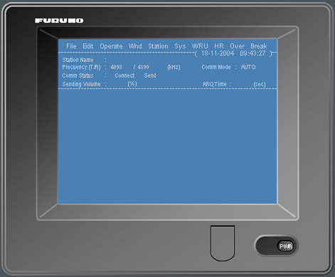
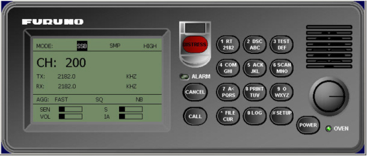

Guía rápida para Terminal NBDP

Llamada Manual
Procedimiento para estable align=centercer una llamada manual entre dos unidades con el terminal NBDP:
- En primer lugar hay que encender la radio MF de las dos unidades en modo Telex como se especifica a continuación:
- Encender la radio MF de las dos unidades (Triana y Gernika), pulsando el botón POWER.
- Girar el selector situado sobre el botón POWER para desplazar la marca de selección por la pantalla y seleccionar el primer campo de la línea MODE: (el que aparece marcado en la figura).
- Sin cambiar la posición, presionar el selector para mostrar los modos posibles.
- Girar de nuevo el selector para seleccionar TLX y presionar (sin cambiar la posición) para aceptar el modo TLX.
- Encender el terminal NBDP de las dos unidades (Triana y Gernika) pulsando el botón PWR y aparecerá la pantalla de espera con el menú principal.
- Cambiar en ambas unidades el modo de recepción de mensajes a ARQ:
- Seleccionar con el cursor la opción Manual Reception del menú Operate.
- En la ventana que se muestra seleccionar YES y pulsar la tecla Enter.
- En la ventana Comm Mode seleccionar ARQ con las teclas de flecha y pulsar la tecla Enter.
- Definir una unidad como receptora y otra como transmisora:
- Unidad Receptora - seleccionar con el cursor la opción Manual Calling del menú Operate y en la ventana que se muestra seleccionar el modo IRS e introducir el número SellCall de la unidad trasmisora.
- Unidad Trasmisora - seleccionar con el cursor la opción Manual Calling del menú Operate y en la ventana que se muestra seleccionar el modo ISS e introducir el número SellCall de la unidad receptora.
- Una vez definidas las unidades receptora y transmisora, se estable align=centerce comunicación entre ellas, de manera que en el área de edición de la pantalla de la unidad receptora se muestra el texto que se escribe desde el área de edición de la unidad transmisora.
- Cuando el emisor teclea +?, la unidad receptora pasa a ser transmisora y viceversa.
- Para terminar la comunicación se pulsa la opción de menú Break o la tecla F10.



Nota: El procedimiento para mover el selector del equipo software se describe en la Nota1 del apartado Radioteléfono MF / Fonía.


Ejemplo:
| Unidad Receptora - Gernika | Mode: IRS ID: 08003 |
| Unidad Emisora - Triana | Mode: ISS ID: 08002 |